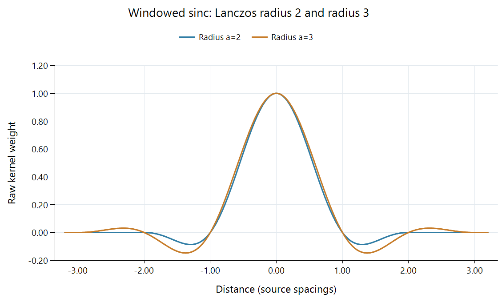

Lanczos Video Scaling
Lanczos scaling reconstructs samples with a finite windowed-sinc kernel whose radius controls the contributing neighborhood.
An idealized reconstruction of a regularly sampled, suitably band-limited signal uses a sinc function whose oscillating contributions extend indefinitely. A practical scaler needs a finite neighborhood. Lanczos makes that neighborhood finite by multiplying sinc by another stretched sinc window and cutting the result off at a selected radius.
The resulting shape has a positive center and smaller alternating lobes. Those lobes help shape the reconstruction response, and their negative weights also explain why a strong edge can acquire ringing.

Both functions have central value one. The horizontal axis is distance in source-sample spacings; the vertical axis is a raw weight before normalization at an output position.
Sinc multiplied by a finite window
Define sinc(x) = sin(πx)/(πx), with the limiting value sinc(0) = 1. For radius a:
K(x) = sinc(x) × sinc(x/a), when |x| < a; otherwise K(x) = 0.
The first factor supplies the reconstruction shape. The second smoothly suppresses its outer contributions toward the selected support boundary. Radius two and radius three therefore differ in both how many neighbors can contribute and the weights inside that neighborhood.
At nonzero integer distances within the radius, the first sinc factor is zero. At an exactly aligned source position, the other integer-indexed neighbors consequently contribute zero and the central sample is recovered in this idealized calculation.
Fractional output positions make the other lobes participate. That is where the finite-radius choice becomes especially visible.
Six weights for a midpoint
At x = 0.5 with a = 3, source indices −2 through 3 form the contributing set. Evaluating the kernel and normalizing its raw sum gives:
| Index | Distance | Normalized weight |
|---|---|---|
| −2 | 2.5 | +0.024457 |
| −1 | 1.5 | −0.135870 |
| 0 | 0.5 | +0.611413 |
| 1 | 0.5 | +0.611413 |
| 2 | 1.5 | −0.135870 |
| 3 | 2.5 | +0.024457 |
The values are rounded here; their unrounded sum is one. A uniform source row of 0.4 therefore remains 0.4. An abrupt transition responds to the same signed contributions differently: the combination can be above a nearby bright value or below a nearby dark value.
Normalizing is useful because truncating and windowing the infinite sinc reconstruction does not guarantee a raw sum of exactly one for every fractional phase. The weighted average uses the actual phase's sum to preserve a constant signal.
Applying the function to a two-dimensional picture
A conventional separable Lanczos scaler uses one such function horizontally and one vertically. A source position's direct contribution is the product K(dx) × K(dy). The support is rectangular, and the filter can be implemented through reusable one-dimensional passes.
EWA Lanczos uses a different, radial Jinc-based construction. Its similar name reflects a windowed-reconstruction idea; the spatial weight function is different. Its footprint page shows the distinction visually.
For an Emby resize comparison, the radius and processing stage are useful context. A server conversion and the app's final presentation can each apply their own reconstruction. Examining the delivered frame separately from its display enlargement distinguishes those contributions to a fine line or edge.
A reduction changes the source-space support
At half width, each destination sample represents a larger input span. A properly scale-adapted radius-three filter can cover six source spacings on each side of the requested position, rather than using the enlargement footprint unchanged.
This broadens the low-pass action before the coarser grid is sampled. A finite-window choice still has a frequency response rather than a perfect brick-wall cutoff, so a useful visual comparison contains both repeating fine texture and isolated edges. The texture exposes alias control; the edge exposes the signed lobes already visible in the plotted function.